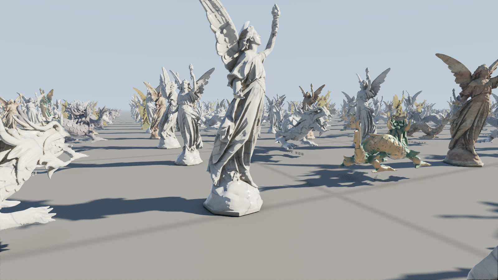
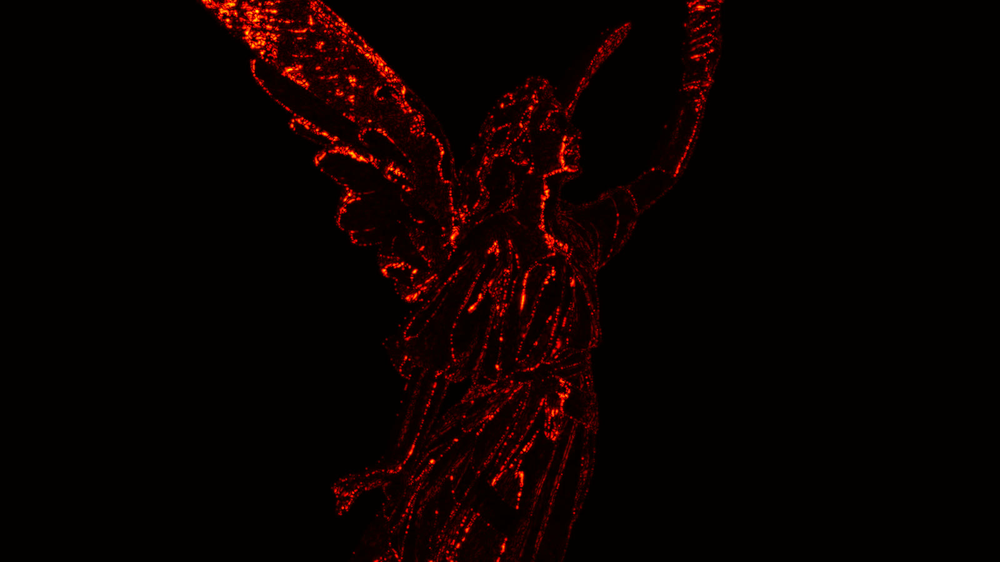
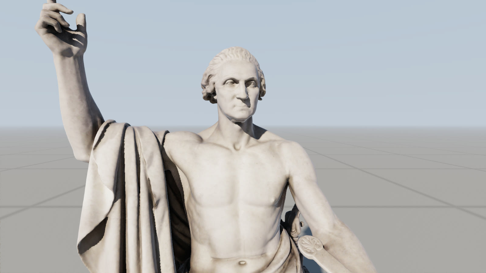
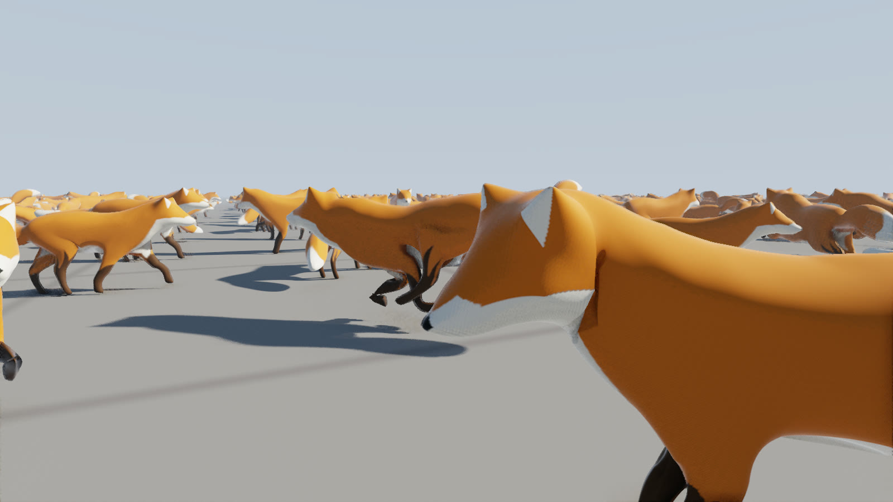
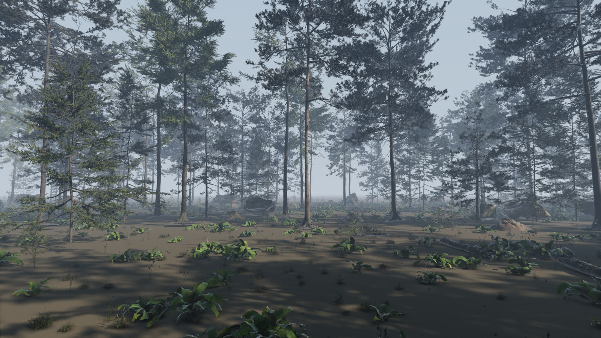

Notes from building a Nanite-style renderer from scratch, and from trying to prove, rather than hope, that every cluster it draws is within a pixel of the original.
Working draft: being revised, and it will change
Abstract. Colossus is a virtualized geometry renderer I wrote from scratch in C++20 and Vulkan, with a WebGPU port that runs in a browser. It follows the design Epic described for Unreal Engine 5's Nanite: a crack-free hierarchy of triangle clusters, streamed from disk, from which the GPU picks, per cluster, the coarsest detail that stays within a pixel of the original. Most of that is a reimplementation, and I credit it as one. What I want to write about are the places where I tried to go a step further and the places where that turned out to be hard. The first is the error bound: instead of a heuristic, each level carries a proven upper bound on its distance from the full-detail surface, projected without the usual approximation, and I check the claim in images rather than assert it. At a one pixel threshold, every pixel whose coverage changes touches the full-detail silhouette. The others are what happened when the renderer met real content: museum scans with textures, a skinned and animated character, and photoscanned foliage made of millions of separate needles. Each one broke an assumption, and each fix taught me something about where proofs end and measurements have to begin. Measured against meshoptimizer's reference builder through the same renderer, colossus keeps silhouettes tighter at the same triangle count, and meshoptimizer shades better. 900 statues totalling 15.9 billion triangles draw at 1920x1080 in 1.51 ms on an RX 9070 XT.
I started colossus because I wanted to understand Nanite properly, and the only way I trust myself to understand a system is to build it and watch it fail. Brian Karis's 2021 talk [1] explains the shape of the idea clearly: split a mesh into small clusters, simplify groups of them into coarser clusters, repeat until one cluster is left, and let the GPU walk the result each frame, choosing for every cluster whether it, or something coarser, is good enough for the pixels it covers. Reading it, I found it easy to nod along and much harder to say exactly why the cut it picks is crack-free, or what "good enough" is promising.
So colossus is two things at once. It is a working renderer: clustering, simplification, graph partitioning, streaming from disk, culling, two rasterizers, virtual shadow maps, ambient occlusion and bounce light, temporal antialiasing, all in the repository with no engine underneath. And it is a long exercise in replacing "it looks right" with something I can check. This paper walks through the pieces in the order they taught me something, and is honest about which claims are proven, which are measured, and which are still hopes.

The builder reads a scan and produces a directed acyclic graph of clusters. Clusters hold at most 128 triangles and 128 vertices, made by recursive bisection of the triangle graph, which fills nearly every cluster completely (the dragon's 56,404 leaves average 128.0 triangles; a greedy grower I wrote first left 8% of them as small walled-in pockets). Each level then groups about eight neighbouring clusters, simplifies each group to half its triangles, and splits the result back into clusters.
The trick that makes any mix of levels crack-free is locking. A vertex used by two groups may not move, so a group's outline is identical before and after its simplification, and a coarse group always meets its neighbours, coarse or fine, edge for edge. Groups fall differently at every level, so no outline survives for long. I check this rather than trust it: --check builds every cut at 25 thresholds and looks for any edge used by a single triangle whose ends are not both on one of the scan's own holes. Every model in this paper passes at every cut.
Selection then needs no tree walk at all. Each cluster stores its own error and its parent group's, and if both grow monotonically toward the root, the rule
own error on screen <= threshold < parent error on screen
picks exactly one level along every path from a leaf to the root. One GPU thread per cluster evaluates it independently.
The interesting word in that rule is "error." Simplifiers usually report quadric error [2], which is a mean squared distance and routinely understates the worst spot by a factor of two or more. If that number decides when a cluster is good enough, "within a pixel" is a hope.
Colossus instead bounds the two-sided Hausdorff distance between each group and its simplification from above. Over a single triangle, the distance to one triangle of the other mesh is a convex function, so it is largest at the corners; the distance to the whole mesh is at most the smallest such corner bound over nearby triangles. Pieces whose bound could still beat the worst distance found so far are split in four and refined until every bound is within 10% of it. The result is always an upper bound; refining only tightens it. A test compares it against brute force on about 94,000 random points. Errors add up the levels (a coarse level's error is its children's plus its own), so they grow monotonically, and the grid snapping used to store positions adds half a grid step's diagonal so that what is drawn, not just what was built, stays inside the bound.
The second half of the claim is the projection. The common estimate, error divided by distance, treats the screen as if every point sat on the optical axis. A point at position p moved by e moves at most lod_scale · e · |p| / z² pixels, which grows away from the centre of the screen, by up to 2.2 times in a 16:9 corner. Colossus judges each sphere by its nearest depth and the angle of its point farthest off axis, capped at the corner. With the honest projection, the old "one pixel" turned out to have been up to two.
A proof about distances is not yet a statement about pixels, so I measured. A script renders five views twice each: once at a threshold of 0.05 pixels, which is full detail as near as makes no difference, and once at the threshold under test, with every source of per-frame noise switched off so that two renders of the same cut are byte-identical. It then compares them two ways. A coverage view draws white wherever a model is, and for every pixel whose coverage differs I measure its distance from the full-detail silhouette. Separately, NVIDIA's FLIP [3] compares the shaded images the way a viewer would.
| view | full detail | at 1 px | coverage differs | farthest from silhouette | FLIP | pixels off by > 8/255 |
|---|---|---|---|---|---|---|
| Lucy, close | 6.21M | 374.1k | 0.011% | 1.41 px | 0.0119 | 1.06% |
| dragon, whole | 3.72M | 273.9k | 0.007% | 0.00 px | 0.0044 | 0.68% |
| Washington, face | 2.18M | 313.5k | 0.010% | 0.00 px | 0.0088 | 0.59% |
| fox, walking | 554.0k | 62.3k | 0.001% | 0.00 px | 0.0003 | 0.03% |
| crowd of nine | 21.66M | 1.10M | 0.020% | 1.41 px | 0.0096 | 1.77% |
At one pixel, in every view, each pixel whose coverage changes touches the full-detail silhouette, at most a diagonal step from it. The silhouette only strays further from 4 pixels in the crowd, and 8 to 16 pixels elsewhere. The shaded differences that remain come from shading, not geometry (Figure 2): a coarse triangle interpolates its corners' normals across a larger span, and the bound says nothing about normals. I think that is the most honest summary of the bound: it is real, it holds, and it is conservative. Lucy draws 374,000 triangles at one pixel, and at sixteen pixels, with 39,000, her outline is still within 2.3 pixels of full detail. A guarantee costs triangles, and now I know roughly how many.

The renderer follows the published design closely, so I will be brief. Instances are culled in cells of 64, then individually; clusters are culled for the level of detail, the frustum, a normal cone and occlusion against last frame's depth pyramid, then again against a fresh one for anything newly visible. Clusters bigger than 32 pixels go to mesh shaders and smaller ones to a compute rasterizer, since pixel-sized triangles are what fixed-function hardware handles worst; both write depth and a triangle id into one 64-bit visibility buffer with an atomic max. Shading refetches each pixel's triangle, intersects the pixel's ray with it for exact barycentrics, and lights it with virtual shadow maps (a 14-level clipmap of 128x128 texel pages), screen-space ambient occlusion and a single bounce of indirect light.
Only bounds and errors stay resident, 48 bytes a cluster. Geometry lives in pages, one per group, that stream into a fixed pool on demand. Cuts stay whole during streaming because a page is resident only while the pages of its coarser stand-ins are, which means that whatever has loaded, exactly one cluster draws on every path. Pages are bit-packed per cluster: positions as offsets on a grid in just the bits the cluster's extent needs, normals as 11 plus 11 bit octahedral, and triangle indices in the bits the vertex count needs. I tried to squeeze them further. General-purpose compressors find almost nothing left (zstd at level 19 saves 2%), and the obvious next step, storing triangles as a base index plus small offsets, saves under 5% of the triangle data (under 2% of a page) because one wide triangle sets the width for its whole cluster. Real gains would need sequential strip encodings decoded into shared memory, which gives up the random access the shading pass relies on. That trade-off is the honest end of this thread for now.
The image check from section 3 earned its keep here, on a bug no proof could have found. In the Washington close-up, one pixel deep inside the statue showed the sky. It disappeared with either rasterizer alone, so it sat on a seam between a cluster drawn by the hardware and one drawn in compute. Both snap vertices to 1/256 of a pixel, but they do not compute positions bit for bit alike, so now and then a shared vertex lands one step apart and leaves a sliver too thin to see, except where it crosses a pixel centre. Making the two agree exactly is not possible from a shader. The fix grows each compute-drawn triangle by one step and lets the depth test settle the overlap. Over sixteen crowd views, the holes against hardware-only rendering went from nine to none, at the price of 913 silhouette pixels whose centres lie within 1.5/256 of an edge.
The Stanford scans I started with have no texture coordinates, so their marble and bronze are procedural. To be honest about real content I needed a textured scan, and the Smithsonian American Art Museum has released Horatio Greenough's 1840 statue of George Washington under CC0: 17 million triangles and a 4096x4096 texture.
Simplifying a textured mesh means a vertex is no longer one thing. On a seam, the same position has different texture coordinates in each chart, so colossus keeps them per wedge: a vertex as one chart sees it. A collapse moves each corner onto the kept vertex's wedge in the same chart, and is refused where there is none, so seams slide only along themselves and every level's coordinates are exactly the original's. That rule worked perfectly on my test sphere with eight charts and then stalled completely on the scan, at 28 thousand triangles with every group stuck: a photogrammetry atlas has hundreds of small charts, and the rule pins them all. The fix is to let a stuck group's seams move, keeping each corner's old coordinates on a new wedge at the kept vertex. Positions stay shared, so there are still no cracks, and the texture slips across a seam by no more than the collapse moved, which the error already counts.
Textures stream the way geometry does. Each mip level is cut into 128x128 tiles (120 texels and a four texel border, so bilinear filtering never leaves a tile), compressed to BC1, and every tile is a page in the same streamer whose dependency is the coarser tile over it. The rule that keeps cuts whole now guarantees that a coarser copy is always resident, so a missing tile simply draws its parent until it arrives. Shading decodes the BC1 blocks by hand from the page pool, which sounds expensive and is not: textured shading costs 0.61 ms on the scan against 0.78 ms for the procedural marble it replaces.
Poly Haven's models also bring normal and roughness maps. Those are one channel of data each (a normal map's x and y, a roughness), stored as BC4, whose blocks are BC1's size, so every tile stays the same size and the streamer never knew the difference. The tangent frame comes per pixel from the triangle's own corners and texture coordinates, so nothing extra is stored; Khronos's NormalTangentMirrorTest model, built to catch exactly the convention mistakes this invites, renders right, mirrored coordinates included.

An animated character was the first place the provable approach failed outright, and it is the part of this project I learned the most from. Linear blend skinning moves each vertex by a weighted blend of joint transforms. A coarse triangle's interior blends its corners' weights linearly, while the fine surface it stands for blends its own, and the two disagree wherever the weights change quickly. Bounding that disagreement means assuming the worst mix of weights against the worst separation of joints. I derived that bound, implemented it carefully, and measured: 900 animated foxes drew 51.9 million triangles in 8.86 ms, against 1.33 million for the same foxes standing still. At coarse levels the worst case is a whole body length, so no fox could ever go coarse, even when it covered thirty pixels.
The way out was to notice that the animations are known when the model is built. So the builder measures each group's simplification posed: the fine and the simplified surface, skinned by the same joints, at sixteen times in each animation and in the rest pose, with the worst distance added to the group's error. That alone was not enough, because the simplifier itself was blind to motion: its quadrics come from the rest pose, where the skin around a knee is flat, so it happily removed exactly the vertices a bent knee needs. Summing quadrics over several poses, as Mohr and Gleicher proposed for articulated meshes [4], fixed it. The median error at the first level fell from four times the rigid model's to the same, and the crowd now draws 3.41 million triangles in 1.86 ms.
The rest of skinning was engineering. Every animation is posed at sixteen phases on the CPU once a frame, so a million foxes share a few dozen poses. Culling spheres follow the joints: the level-of-detail test takes the smaller of two bounds that both nest from leaf to root (one follows the most weighted joint, one grows the rest pose by how far the joints move), and the smaller of two nested bounds still nests. Antialiasing finds where a pixel was last frame through its triangle posed as last frame, since skinning has no inverse.

Statues are the friendliest content there is: one closed surface, every triangle sharing its edges with three others. For a real scene I wanted the opposite, so I chose a forest.
A photoscanned pine from Poly Haven's CC0 pine forest collection is about seven million triangles, and most of them are needles: thousands of separate little pieces. Edge collapse is built never to delete an island, so simplification stalled with the needles intact: at the tenth level, every one of its 13 thousand groups was stuck. Two changes got it moving. The partitioner, which grouped clusters only by shared edges, now also links each island to its nearest clusters, weighted below any real connection, so needles form groups with their neighbours. And when collapses stall, vertex clustering takes over, snapping each grid cell's vertices together while every vertex on the group's outline stays exactly where it is, so neighbours still meet it. Needles merge into coarser shapes.
Then the crack check found two cracked edges, at a few of its 25 cuts, in a 24.5 million triangle hierarchy. I want to tell this one properly because I think it is the most useful thing in the paper. My first two theories were wrong. The fix that worked came from instrumenting the builder: after every group's simplification, report any rim edge in the output that touches a vertex which was not on a rim in the input. It pointed not at the new vertex clustering but at the old edge collapse code, in groups whose input had come from clustering. Vertex clustering keeps duplicate triangles on purpose, so that every edge's use count keeps its parity, and that means a rim edge can be used three times. The simplifier, written months earlier for clean scans, defined a rim edge as one used exactly once, so it read those edges as interior and let their vertices wander inward. The definition was right for the meshes I had when I wrote it and wrong for the meshes I had now. Changing "used once" to "used an odd number of times" in two places made every cut of the pine crack-free.
Merged needles cover less area, so at a distance a crown thins. That is the well known weakness of simplifying foliage, and it took me a while to see that the error bound itself allows it. A Hausdorff distance asks how far each surface is from the other. Remove half the needles of a crown and every removed needle is still close to one that remains, so the bound is satisfied while the tree goes see-through. Measured in the coverage view, one pine 200 metres away kept 88% of its full-detail coverage at one pixel, 72% at four and 45% at sixteen.
My first fix grew what clustering left behind: each surviving piece takes the area of the needles that merged into it and scales about its centre to match, a new vertex for each moved one, with the outline's vertices left where they are so cuts stay whole. It helped a little (45% became 50% at sixteen pixels), because most of the thinning happens earlier, in ordinary edge collapses that turn needles into slivers. Growing after those too compounded level on level until groups stuck and the pine never reached a root, so I took that back out.
The fix that worked changes what the error means for foliage. A group made mostly of open rims, which is how needle cards look and closed scans do not, now also counts the area it lost: its error is at least the square root of that area. A cut drawn at t pixels then loses at most about t² pixels of coverage per group, and the renderer refines wherever it would lose more. Counting all of the lost area, the same pine kept 95% at one pixel, 85% at four and 60% at sixteen, for two and a half times the triangles. Much of a crown's lost area is behind other needles, so the default counts half of it (a cut at t pixels then loses about (2t)² pixels a group): 91% at one pixel, 74% at four and 51% at sixteen, for 1.2 to 1.4 times the triangles. It costs triangles, honestly: the forest draws 113 million where it drew 90. The statues, closed surfaces, build byte for byte as they did.
With these fixes, all 55 models in the collection build crack-free at every cut. Scattered over 100 by 100 metres, the forest is 14,780 instances and 753 million triangles at full detail, and it draws in 7.5 ms at 1920x1080 with Poly Haven's normal and roughness maps (Figure 5). That is about five times the statues' frame, and I think it is the honest number to show: crowns are mostly pixel-sized triangles that hide little behind them, and keeping them full means drawing them. Its rasterizer turned out to be bound not by triangles but by the visibility buffer: with the writes taken out it rasterizes 364 million triangles in 1.33 ms, and a read or an atomic per covered pixel costs the same. Resolving each cluster in shared memory first, the obvious fix, was slower at every tile size I tried, the 64-bit shared atomics and the occupancy they cost outweighing the traffic they saved.

The WebGPU port runs the same pipeline without mesh shaders, 64-bit atomics or ray queries: big clusters go through a plain render pipeline, the compute rasterizer runs twice (depth by 32-bit atomic max, then the triangle wherever its depth won), and pages stream over HTTP range requests. The tightest constraint was the limit of 16 storage buffers per shader stage, which one layout already reached; skinning's joints ride in the page table buffer after the shared bounds rather than in a buffer of their own. Skinning's untaken branches still cost the statues 0.1 ms in registers, so every geometry pipeline also exists compiled without it, and the renderer uses that set while nothing on screen is skinned. Phones without WebGPU get a WebGL2 fallback that runs the same level-of-detail test on the CPU. In Chrome, 900 statues take 1.73 ms of GPU time once streaming settles.
A number like 1.51 ms means little without a yardstick, so I built Lucy and the dragon a second way, with meshoptimizer's clusterlod, the reference Nanite-style builder most graphics programmers know, at its own default settings. A small tool converts its hierarchy into colossus's format, which works because the two agree on what a group is and when a cluster draws. Both builds then go through the same renderer, cameras and measurements, so only the builder differs. Both are crack-free at every cut.
| view | builder | threshold | triangles | coverage differs | farthest from silhouette | FLIP |
|---|---|---|---|---|---|---|
| Lucy, close | colossus | 1 px | 374.1k | 0.011% | 1.41 px | 0.0119 |
| Lucy, close | clusterlod | 0.5 px | 365.0k | 0.012% | 1.41 px | 0.0097 |
| dragon, whole | colossus | 1 px | 273.9k | 0.007% | 0.00 px | 0.0044 |
| dragon, whole | clusterlod | 0.5 px | 240.9k | 0.012% | 0.00 px | 0.0038 |
| crowd of nine | colossus | 4 px | 235.5k | 0.076% | 2.24 px | 0.0178 |
| crowd of nine | clusterlod | 2 px | 230.9k | 0.132% | 8.00 px | 0.0167 |
The result was not the one I hoped for, and I think it is more useful for that. At about the same number of triangles, meshoptimizer shades as well or better: its simplifier weighs normals, and mine only measured positions. Colossus keeps silhouettes tighter, with half the coverage change or less and never more than 2.24 pixels out where clusterlod's strayed 8 to 9 in the crowd. Its threshold is an estimate, so its "one pixel" draws about what my two to four do. Through the same renderer a triangle costs the same, so at one pixel the crowd takes 1.54 ms against 1.42: that difference is the price of the guarantee. meshoptimizer also builds 1.6 to 3.4 times faster.
The comparison handed me an improvement. Pricing each collapse by how much it changes the normal as well as the position lowers FLIP by 5 to 10% at equal triangles, without touching the proof, because the bound is still measured after. It also makes each pixel of threshold cost more triangles, so it is an option rather than the default. I then tried the textbook version, Hoppe's attribute quadrics, and at equal triangles it was no better at all. That told me where the gap comes from: not the order of collapses within a group, but which level each part of the model draws at. Colossus chooses that by a geometric distance, so it spends its triangles on silhouettes; meshoptimizer folds shading into its error and spends them where the normals change. Closing the gap would mean making shading part of the error, which is a different promise, not a better one.
A demo shows the best case, so here are the worst ones I know of, measured where I could.
Most of the hard problems in this project were not where I expected them. The cluster hierarchy, which looks like the clever part, worked within days. What took weeks was every place where a definition I had written for one kind of mesh quietly stopped being true for the next: one texture chart per seam, one pose per surface, one triangle per rim edge, a distance as the whole of what an error means. The habit that helped most was refusing to accept "it looks right": a crack check that runs on every build, a measurement that renders the claim instead of restating it, and an instrumented build when a theory failed twice. I did not expect a renderer to teach me that, but it did.
The design follows Brian Karis, Rune Stubbe and Graham Wihlidal's Nanite [1]. Lucy and the dragon are from the Stanford 3D Scanning Repository (and XYZ RGB Inc. for the dragon). George Washington is the Smithsonian American Art Museum's scan, released CC0 through Smithsonian Open Access. The fox is from the Khronos glTF sample assets: model by PixelMannen (CC0), rigging and animation by tomkranis, glTF conversion by AsoboStudio and scurest (CC BY 4.0). The forest is Poly Haven's pine forest collection (CC0). Image comparisons use NVIDIA's FLIP [3].
[1] B. Karis, R. Stubbe, G. Wihlidal. Nanite: A Deep Dive. SIGGRAPH Advances in Real-Time Rendering in Games, 2021.
[2] M. Garland, P. Heckbert. Surface Simplification Using Quadric Error Metrics. SIGGRAPH 1997.
[3] P. Andersson, J. Nilsson, T. Akenine-Möller, M. Oskarsson, K. Åström, M. Fairchild. FLIP: A Difference Evaluator for Alternating Images. Proceedings of the ACM on Computer Graphics and Interactive Techniques, 2020.
[4] A. Mohr, M. Gleicher. Deformation Sensitive Decimation. Technical report, University of Wisconsin, 2003.